Anexo.- Licencias de recursos.
| Recurso (1) | Datos del recurso | Recurso | Datos del recurso |
|---|---|---|---|
| 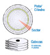 |
Autoría: Carlos Emilio Joaqui Licencia: Dominio Público Procedencia: http://es.wikipedia.org/wiki/Archivo:Cilindro_Cabeza_Sector.svg |
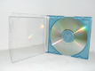 |
Autoría: gracevi_3 Licencia: CC -by-sa Procedencia: http://www.flickr.com/photos/40542772@N05/4015112971/in/photostream/ |
| 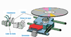 |
Autoría: Elguardiandepikamierda Licencia: CC-by-sa Procedencia: Montaje sobre http://es.wikipedia.org/wiki/Archivo:LectoraCD.PNG |
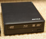 |
Autoría: masatsu Licencia: CC BY-SA Procedencia: http://www.flickr.com/photos/masatsu/4271831332/sizes/l/in/photostream/ |
| 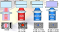 |
Autoría: Imageshack Licencia: Copyright (cita) Procedencia: http://imageshack.us/photo/my-images/471/quemado1yu.jpg/ |
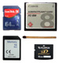 |
Autoría: Zxb Licencia: CC-by Procedencia: http://upload.wikimedia.org/wikipedia/commons/a/a4/Flash_memory_cards_size.jpg |
| 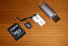 |
Autoría: Iván PC Licencia: CC-by-sa Procedencia: http://www.flickr.com/photos/ivi/2628120653/ |
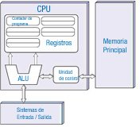 |
Autoría: David Strigoi Licencia: dominio público Procedencia: http://es.wikipedia.org/wiki/Archivo:Arquitecturaneumann.jpg |
| 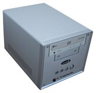 |
Autoría: Wyglif Licencia: Dominio público. Procedencia: http://es.wikipedia.org/wiki/Archivo:Shuttle_SN41G2.jpg |
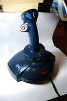 |
Autoría: martitoy Licencia: CC-by-nc Procedencia: http://www.flickr.com/photos/martix/2960731006/ |
| 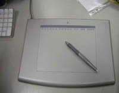 |
Autoría: CosmoCAX Licencia: CC-by-nc-sa Procedencia: http://www.flickr.com/photos/11390952@N05/1710757242/ |
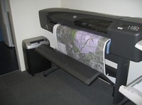 |
Autoría: zusjes weblog Licencia: CC-by-nc-nd Procedencia: http://www.flickr.com/photos/zusje/261629830/sizes/z/in/photostream/ |
| 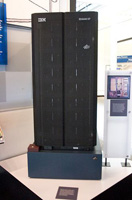 |
Autoría: James the photographer Licencia: CC-BY Procedencia: http://www.flickr.com/photos/22453761@N00/592436598/ |
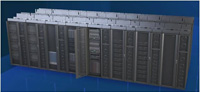 |
Autoría: lumunozf Licencia: CC-by-sa Procedencia: http://es.wikipedia.org/wiki/Archivo:Calendula_g.jpg#filelinks |
| 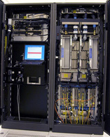 |
Autoría: Ing. Richard Hilber Licencia: Dominio público Procedencia: http://commons.wikimedia.org/wiki/File:Inside_Z9_2094.jpg |
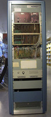 |
Autoría: Thomas Skogestad Licencia: CC-by-sa Procedencia: http://upload.wikimedia.org/wikipedia/commons/5/5e/ND_NORD-1.TS.jpg |
| 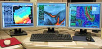 |
Autoría: JonathanLamb Licencia: dominio publico Procedencia: http://commons.wikimedia.org/wiki/File:AWIPS-3-head-workstation.jpg |
 |
Autoría: Alancaio Licencia: CC-by-sa Procedencia: http://es.wikipedia.org/wiki/Archivo:Cliente-servidor.jpeg |
| 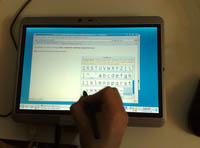 |
Autoría: sukiweb Licencia: CC-by-sa Procedencia: http://www.flickr.com/photos/sukiweb/2178016562/sizes/z/in/photostream/ |
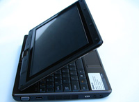 |
Autoría: umpcportal.com Licencia: CC-by-sa-nd Procedencia: http://www.flickr.com/photos/umpcportal/3488934712/sizes/l/in/photostream/ |
|
Autoría: umpcportal.com Licencia: CC-by-nc-nd Procedencia: http://www.flickr.com/photos/umpcportal/5456354523/sizes/z/in/photostream/ |
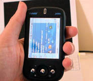 |
Autoría: jnxyz Licencia: CC-by-nc Procedencia: http://www.flickr.com/photos/jnxyz/212388666/sizes/m/in/photostream/ |
|
| 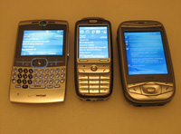 |
Autoría: sparktography Licencia: CC-by-nc Procedencia: http://www.flickr.com/photos/sparktography/166881383/sizes/z/in/photostream/ |
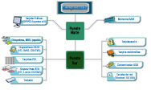 |
Autoría: José Carlos Gallego Cano Licencia: CC-by-sa Procedencia: http://commons.wikimedia.org/wiki/File:Esquema_chipset.jpg |